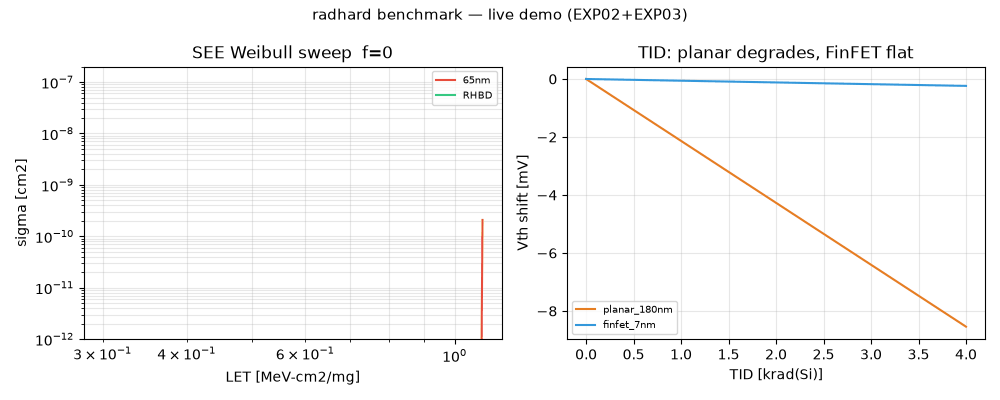
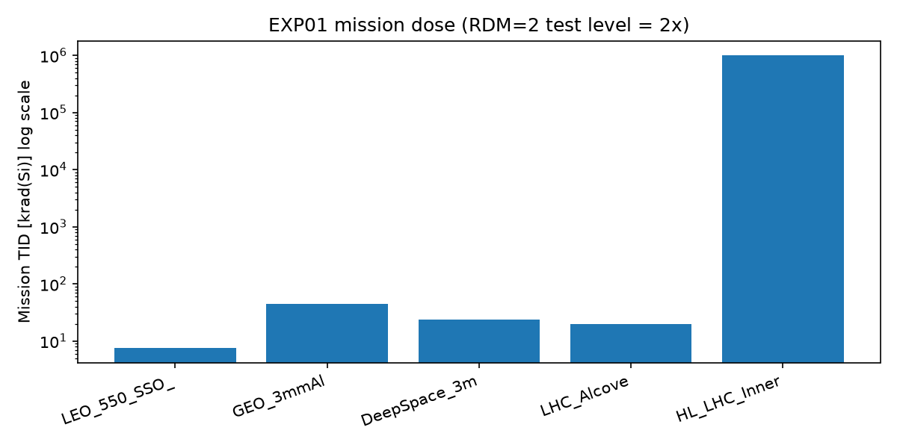
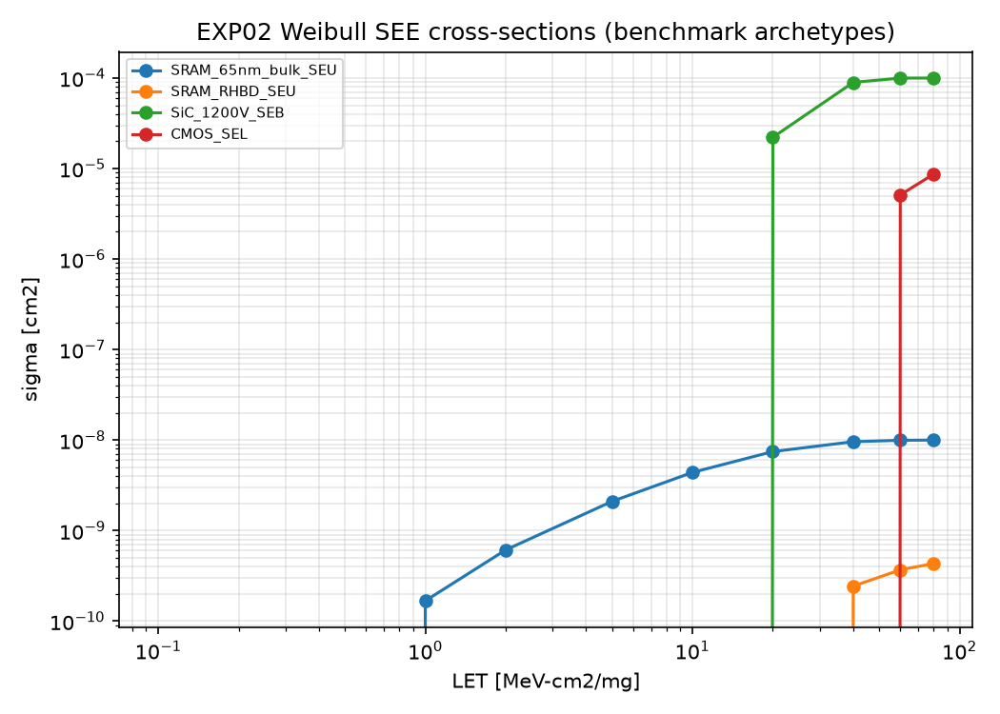
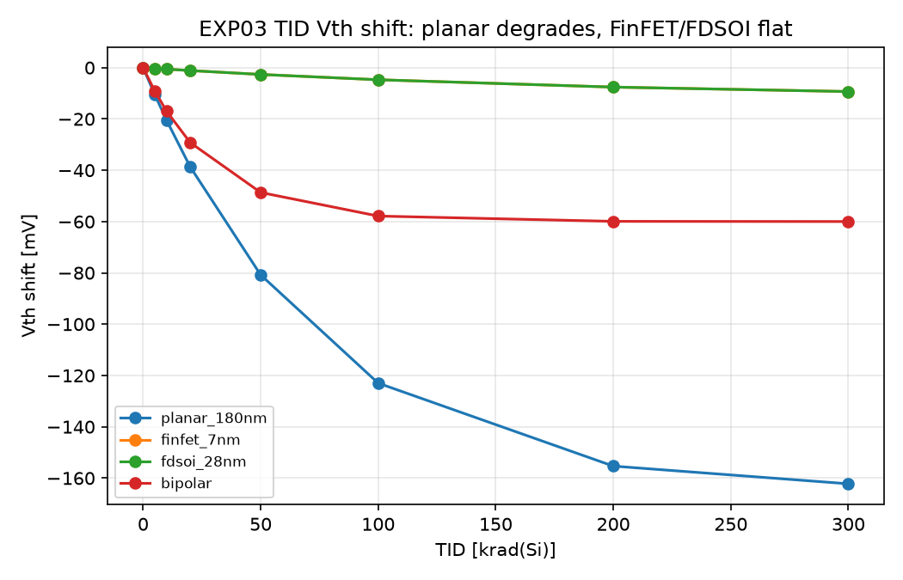
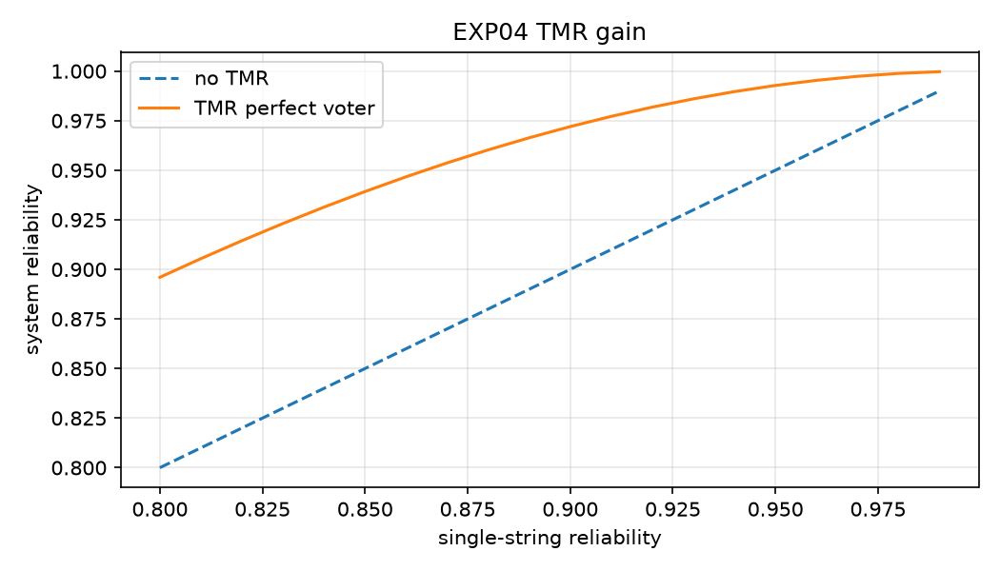

From accelerators to space — one repo that lets you predict, test, and prove your electronics will survive radiation.
CEO summary: pick your mission (CubeSat, GEO comsat, LHC), get the dose + upset rate in seconds, see which parts pass a strict space gate, and what to derate or scrub. Everything regenerates with one command. No lab needed to learn; lab-ready when you test.
Demo video (10s): Weibull SEE sweep + TID sweep. GIF fallback below. If video does not play, open assets/demo.mp4.

Let's work this out in a step-by-step way to be sure we have the right answer.
You now know more than most interview candidates. Next: press Run and see the numbers move.

7 orders of magnitude: avionics → LEO → GEO → LHC alcove → HL-LHC inner (1 MGy).

COTS vs rad-hard SRAM: ~100× gap at low LET. This is why part choice matters.

Planar drifts −123 mV @100 krad; FinFET −4.7 mV. Opposite story for SiC voltage.

Single 0.90 → voted 0.972. Scrubbing: 10× storm flux collapses uncorrectable-interval >10× — scrub faster or predict storms.
| Area | What you get | Where |
|---|---|---|
| Environments | LEO/GEO/deep-space/LHC/avionics reference + live NOAA GOES fetch + mission×RDM calculator | src/radhard/environments.py, EXP01 |
| Interactions | LET→charge, Qcrit, rad↔Gy, HEH→Gy, NIEL factors | src/radhard/interactions.py |
| Effects | Weibull SEE, TID Vth (planar/FinFET/FDSOI/bipolar), SiC safe-area | src/radhard/effects.py, EXP02–03 |
| Mitigation | TMR reliability, ECC scrub MTBU, availability | src/radhard/mitigation.py, EXP04 |
| Assurance | RDM≥2, SEL>75, SEB>37 gates + alpha-factor orbit projection | src/radhard/rha.py, EXP05 |
| Reproducibility | Docker, CI, pytest, CSV+PNG+JSON outputs, this preview | run_all.sh, Dockerfile |
Map each week to an experiment. Change LET, watch Weibull move. Submit the plots as coursework.
Enter 550 km 3-yr dose (7.5 krad). See COTS ADC passes TID but fails SEL → add latch-up protection or pick RHBD FPGA.
Check your SiC bus: 800 V = high SEB risk, 150 V = safe. Take the SOA CSV to your derating review.
Scale CHARM fluence (1e11 → mission) with alpha-factor. Justify test time to your project leader.
Ask vendors for LETth + RDM numbers. If they cannot provide, you now know the risk.
Fork H1–H6 hidden patterns: scaling inversion, wide-bandgap paradox, scrub non-linearity, peripheral bottleneck, low-E protons, system blindness.
git clone <this-repo> && cd radhard-electronics-benchmark-2026 pip install -r requirements.txt bash run_all.sh # → results/*.csv + *.png + pytest 6 passed # Docker alternative: docker compose up --build
pip install gets numpy/matplotlib/scipy/requests. run_all.sh runs EXP01→EXP05 in order, saves figures, then runs tests. No internet required except EXP01 live check (falls back to quiet baseline offline).
| ID | Question | Key number (verified) |
|---|---|---|
| EXP01 | How harsh is my mission? Is space quiet today? | LEO 7.5 krad/3yr, GEO 45 krad/3yr, HL-LHC inner 1,000,000 krad/10yr; GOES 2026-10-02 QUIET (3718 pts) |
| EXP02 | Will a particle flip my bit? | Qdep 10.37 fC; Qcrit 18 vs 0.375 fC; GEO upset/day 0.069 vs 0.0035 |
| EXP03 | Will dose drift me? Will voltage kill me? | planar −123 mV vs FinFET −4.7 mV @100 krad; SiC safe <200 V |
| EXP04 | Do TMR + scrub save me? | 0.90→0.972; MTBU 962kh→9.5kh when rate ×10 |
| EXP05 | Can I fly this part? | GEO: COTS FAIL, RHBD PASS, SiC@800V FAIL unless derated |
PASS needs all three: RDM ≥ 2 SEL LETth > 75 SEB LETth > 37 + derating
Example output results/exp05_rha.csv: GEO 45 krad → COTS_ADC RDM 0.44 FAIL; RHBD_FPGA 6.67 PASS; SiC@800V SEB FAIL → derate to 150 V PASS. LEO 7.5 krad → COTS TID passes but SEL still fails → needs latch-up mitigation.
No. Learn fully from simulation. When you do test, bring the RHA table to the facility (TAMU/LBNL/PSI/CHARM) and they will know what to do.
results/exp05_rha.csv + this page. One table = flight rationale.
Yes, in LEO with mitigation (scrub, watchdog, current limiter) and eyes open on SEL. No, in GEO for critical functions without proof.
Same numpy/matplotlib versions everywhere → same plots for reviewer, student, and CI.